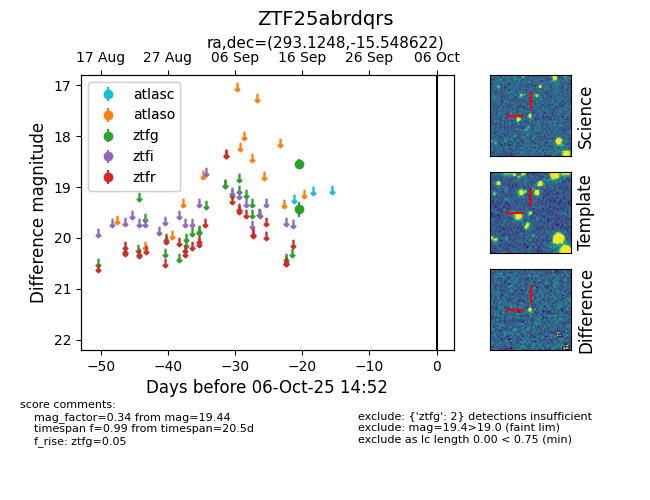

FINK: ZTF25abrdqrs
Lasair: ZTF25abrdqrs
ALeRCE: ZTF25abrdqrs
ZTF25abrdqrs (ztf,fink)
equatorial (ra, dec) = (293.1248,-15.54862)
galactic (l, b) = (23.3353,-15.96359)

last ztfg=19.44
2 ztfg detections